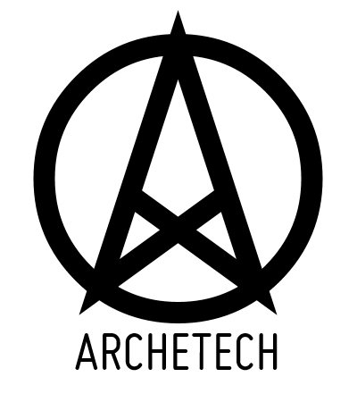

|  |
Christian Saucier has a Computer Science degree from the University of Sherbrooke and an MBA from the University of Georgia. Christian is a business leader with 20 years of experience bringing together technological know-how and business savviness. He provides product vision and follows-through to the implementation and commercialization of impactful solutions. Over the course of his career, Christian consulted with numerous Fortune 100 companies including IBM, J&J, Cisco, Oracle, and Sprint. Early in his career, Christian designed and implemented web-based software solutions. His expertise was noticed by one of the Big-5 consulting firms, which brought Christian to get his first consulting assignment in the USA. During his 10 years as a consultant, Christian developed his leadership potential and learned to apply his analytical skills to new types of problems: system architecture, market analysis, product management, and strategic sales. Today, Christian still has a passion for new technologies. Christian is an early supporter and evangelist for crypto-currencies like Bitcoins. He promotes and encourages the development of decentralized autonomous solutions to build a better future based on voluntary peer-to-peer collaboration. Christian is an optimist, a futurist, and a voluntaryist. He loves adventure, enjoys travelling, and takes every possible opportunity to hit the road and ride his "Fat Bob" Harley Davidson.
David is a professional software engineer with a masters in artificial intelligence. His career spans over 25 years in high tech startups developing decision support applications and distributed systems, most recently in the advanced medical imaging industry. As a technical leader David has experience as a development manager, trainer, UX designer and CTO but he is most passionate about designing and coding software. David is fascinated by the nature of intelligence (natural, artificial and collaborative) and passionate about building technology to enhance intelligence. This led to inventing systems to enable better decision making: a quantitative reputation system (Meridion), a project schedule estimation system (Galton), and a gamified software development process (Nomicon). As a vocal proponent of the hacker ethic, David shared these inventions as open source. As a futurist David has been involved in the transhumanist community since the early 90s. He served as list administrator, webmaster, and ultimately a director of the Extropy Institute. He presented one of the first implementations of an online prediction market at the Extro-2 conference which later won a Golden Nica from Prix Ars Electronica. He also developed and hosted the site for the influential online conference Vital Progress Summit which generated the Proactionary Principle. David's interests include computer science, crypto-currencies, AI, economics, rationality, cognitive science, skepticism, philosophy, and futurism. He enjoys traveling, speculative fiction, electronic music and playing MMORPGs with his son.
|